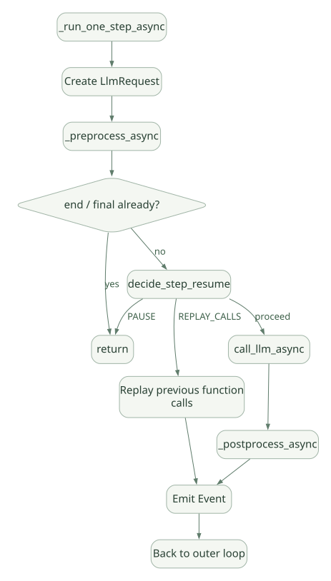

SECOND STUDY / Loop와 모델 입력
Loop와 모델 입력
이번 단원의 읽는 관점
BaseLlmFlow의 반복과 한 Step의 전처리·모델 호출·후처리를 연결합니다.
살펴볼 경계종료·Abort·Partial과 Processor 순서, 실제 Provider 입력을 확인하세요.
이 페이지의 세부 목차
Part II. Agent Loop를 코드에서 읽기
6. LlmAgent는 Loop 소유자가 아니라 Flow 실행의 진입점이다#
[SRC] LlmAgent._run_async_impl(ctx)는 준비된 상태를 읽고 self._llm_flow.run_async(ctx)가 반환하는 Event를 전달하는 경로를 가진다. 출력 State 저장, 스트리밍 결과 처리, pause 등 Agent 수준의 래핑 로직이 있다. **실제 while 반복은 BaseLlmFlow.run_async()**에 존재한다. [S02, S03]
Runner → LlmAgent.run_async / BaseNode.run
↓
LlmAgent._run_async_impl
↓
BaseLlmFlow.run_async ────────┐
↓ │
_run_one_step_async │
↓ │
model request/response │
↓ │
postprocess + Tools │
↓ │
마지막 이벤트 조건 판정 ──────→ 반복/종료주의: LlmAgent를 Workflow 내 노드로 사용할 때는 _run_impl 및 workflow/_llm_agent_wrapper.py 경로가 개입한다. 동일 Agent가 호출 환경에 따라 달리 감싸질 수 있음을 구분한다. [S02]
7. BaseLlmFlow.run_async: 반복과 종료의 실제 조건#
[SRC: S03, 약 264–285행]의 핵심을 의사코드로 재구성:
# 교육용 의사코드: 실제 원본 복제 아님
while True:
if ctx.is_aborted is True:
break
last_event = None
async for event in one_llm_step(ctx):
last_event = event
yield event
if ctx.is_aborted is True:
break
if ctx.is_aborted is True:
break
if last_event is None or last_event.is_final_response() or last_event.partial:
break이 로직에서 무엇을 배워야 하나?#
- 모델을 한 번 호출했다고 Agent 작업이 종료되는 것이 아니다. Tool 호출이 반환되면 다음 모델 요청이 필요할 수 있다.
- 마지막 Event가 최종 응답인지
is_final_response()로 판단한다.FunctionCall만 있는 Event는 일반적으로 최종이 아니다. - Abort는 루프 앞/이벤트 전달 중/루프 끝에서 확인해 지연을 줄인다.
- 마지막 이벤트가 예상 밖의
partial이면 경고하고 종료한다. 즉 Streaming 단편 상태까지 판단에 들어간다. - 이 루프만으로 무한 실행이 절대 불가능한 것은 아니다. 최대 LLM 호출 수, 애플리케이션 예산, 시간 제한을 별도로 고려해야 한다.
종료 상태 매트릭스#
| 상황 | 일반적인 경로 | 설명 |
|---|---|---|
| 일반 텍스트 완성 | final Event → break | 사용자에게 보일 최종 응답 |
| Function Call 요청 | Tool → FunctionResponse → 다음 LLM step | 아직 사고/행동 연속 |
ctx.is_aborted |
Loop 중단 | 외부 작업 취소는 별도 확인 |
| step이 Event를 생성하지 않음 | last_event is None → 종료 |
계속할 근거가 없음 |
| 마지막이 partial | 경고 후 종료 | 정상적인 완료 신호와 구분 |
| HITL·Workflow interrupt | 별도 재개/중단 로직 | 단순 최종 텍스트 종료와 다름 |
| 모델/Tool 오류 | 정책에 따라 Event/예외/Retry | 모두 같은 종류의 Retry가 아님 |
8. _run_one_step_async: 모델 호출 1회의 실제 단계#
[SRC] 이 함수는 주석에서 한 step을 하나의 LLM 호출이라고 정의한다. 일반 경로는 아래와 같다. [S03, 약 306–370행]
LlmRequest()생성._preprocess_async로 이전 대화, 지시문, Tool, 동적 요청 등을 조립.- 전처리 과정에서 Invocation을 끝내거나 이미 처리된 최종 응답이 있으면 중단.
decide_step_resume으로PAUSE,REPLAY_CALLS, 정상 모델 호출을 분기.- 필요할 때
_call_llm_async로 Model Adapter 호출. _postprocess_async에서 Callback, 모델 출력, Function Call, Tool Result 등을 Event로 변환.- Event yield 후 다음 Loop로 복귀.
가로로 이동해서 읽을 수 있습니다. 도식 크게 보기 ↗

원문의 학습용 도식입니다. 연결 방향·분기 조건·점선·쌍방향 연결을 보존해 세로로 배치했습니다. 실제 구현·의사코드·해석의 구분은 본문을 함께 읽으세요.
도식 원문 보기 (Mermaid)
flowchart TD
A[_run_one_step_async] --> B[Create LlmRequest]
B --> C[_preprocess_async]
C --> D{end / final already?}
D -->|yes| Z[return]
D -->|no| E[decide_step_resume]
E -->|PAUSE| Z
E -->|REPLAY_CALLS| F[Replay previous function calls]
E -->|proceed| G[call_llm_async]
G --> H[_postprocess_async]
F --> I[Emit Event]
H --> I
I --> J[Back to outer loop]심층 포인트: 재개 시 항상 모델을 다시 부르는 것이 아니라 기존 Function Call을 재생하는 경로가 있다. 하지만 “Replay = 외부 부작용을 전혀 반복하지 않음”이라고 단정해서는 안 된다. 실제 복원 경계와 Tool의 멱등성을 함께 확인해야 한다.
9. 최종 모델 입력은 단순한 instruction + history가 아니다#
[SRC] BaseLlmFlow.__init__는 request_processors, tool_request_processors, response_processors를 구분한다. Tool 목록이 아직 준비되지 않은 초기 처리기와, Toolset 인증·도구 resolve·동적 Instruction 등 Tool 확정 이후 처리기의 순서가 중요하다. [S03, 약 86–113행]
Session/State + current input
→ Request processors (history, cache/compaction 등 구성된 단계)
→ Tool request processors
· toolset auth
· agent tools resolve
· dynamic instructions
→ LlmRequest (contents / config / tools)
→ Model Adapter request
→ Response processors + Tool postprocessing주의: 이것은 처리기 그룹의 흐름이고, 전처리기 전체의 정확한 등록 순서는 AutoFlow 또는 SingleFlow의 생성 코드를 추가 확인해야 한다. 임의로 ‘항상 동일한 문자열 순서’라고 주장하면 안 된다. 모델에 전달되는 최종 요청 객체와 내부 Instruction 템플릿, Tool Declaration, 세션 기록은 서로 별도 필드로 표현될 수 있다.
Prompt Prefix Cache를 생각할 때#
- 큰 공통 Instruction/Tool Schema를 반복 요청에 재사용하려면 Provider의 캐시 정책, 같은 Prefix, 토큰 한도, TTL 등이 충족되어야 한다.
- 사용자의 세션 기록이 길어져도 자주 바뀌는 부분을 뒤쪽에 두는 편이 Prefix 재사용에 유리할 수 있다. 단 실제 ADK 요청 빌더가 정확히 어떤 정렬을 보장하는지와 Provider의 Cache Key를 구분해야 한다.
- Model Context Caching과 Session 저장, 응답 캐시, Compaction은 서로 다른 기술이다.
10. 모델 호출·Streaming·예산·오류 경로#
[SRC] flows/llm_flows/core/_model_call.py를 따라 Model Resolution → Request → SDK 호출 → 응답 처리 흐름을 분석한다. BaseLlmFlow._call_llm_async()는 그 함수로 위임하는 얇은 메서드이다. [S03, S14]
검토해야 할 항목은 다음과 같다.
| 영역 | 소스에서 찾을 것 | 주의할 질문 |
|---|---|---|
| 모델 선택 | LlmAgent.canonical_model_async() 및 Model Adapter |
Dynamic model 교체/Provider 호환성 |
| 호출 예산 | RunConfig 및 LLM 호출 상한 |
상한이 전체 Workflow/모델 시도/재시도 중 어디에 적용되는가 |
| Streaming | Partial Event와 Complete Event 구분 | UI 연결을 닫으면 실행이 취소되는가 |
| 오류 | 모델 API/HTTP/timeout/empty response의 분기 | 에러를 최종 Event로 바꿀지 예외 전파할지 |
| 중단 | abort_signal, ctx.is_aborted |
자식 Tool도 실제 중단하는가 |
| 관찰성 | OpenTelemetry, Plugin Hooks | 민감한 Prompt/Tool Result가 노출되는가 |
[D08]의 max_llm_calls 및 관련 런타임 설정은 버전에 따라 기본값·예외가 있을 수 있다. 문서의 숫자만 보지 말고 고정 버전 타입과 실행 경로를 함께 확인해야 한다.